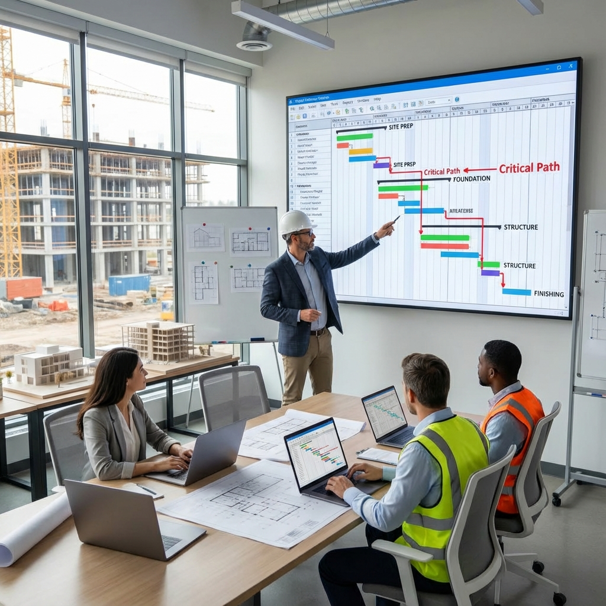

📅 What is Project Scheduling?
Project scheduling is the process of determining activity sequence, durations, and start/finish dates to complete the project on time. It's an essential tool for managing construction projects and ensuring coordination among all parties.
🎯 Importance of Scheduling
- For Owner: Know expected delivery date.
- For Contractor: Organize resources, labor, and equipment.
- For Consultant: Monitor progress and delays.
- For Financing: Link payments to completion percentages.
📊 Types of Schedules
1. Master Schedule
Overview of entire project showing main milestones and major phases.
2. Detailed Schedule
Activities detailed with greater precision including relationships and resources.
3. Two-Week Look-Ahead
Short-term operational plan for daily execution.
4. Phase Schedule
Detail for specific phase like foundations or structure.
🔗 Activity Relationships
| Relationship Type | Meaning | Example |
|---|---|---|
| FS (Finish-to-Start) | A finishes before B starts | Excavation then pouring |
| SS (Start-to-Start) | A and B start together | Excavation and hauling |
| FF (Finish-to-Finish) | A and B finish together | Inspection and handover |
| SF (Start-to-Finish) | A starts before B finishes | Rarely used |
⏱️ Lead and Lag
- Lag (Delay): Mandatory waiting period. Example: Pour concrete then wait 7 days for curing.
- Lead (Advancement): Start next activity before previous ends. Example: Start finishing before structure is 80% complete.
🚧 Constraints
- As Soon As Possible: Start at earliest possible time.
- As Late As Possible: Delay to latest possible moment.
- Start No Earlier Than: Cannot start before specific date.
- Finish No Later Than: Cannot finish after specific date.
- Must Start On: Must start on specific date.
- Must Finish On: Must finish on specific date.
📍 Milestones
Zero-duration activities (Duration = 0) representing important points:
- Project Start
- Foundation Completion
- Structure Completion
- Preliminary Handover
- Final Handover
📐 Steps to Create Schedule
- Define Activities: Break down work into measurable activities.
- Estimate Durations: Determine each activity duration.
- Define Relationships: Link activities together.
- Assign Resources: Link labor and equipment.
- Identify Critical Path: Know most important activities.
- Optimize: Balance resources and reduce risks.
🛠️ Common Scheduling Software
- Oracle Primavera P6: For large, complex projects.
- Microsoft Project: For medium projects.
- Asta Powerproject: Popular in UK.
- Excel: For small, simple projects.
💡 Tips for Beginners
- Start with WBS before creating schedule.
- Don't over-detail initially.
- Review schedule with execution team.
- Update schedule at least weekly.
Next Article: Critical Path Method (CPM) in Construction